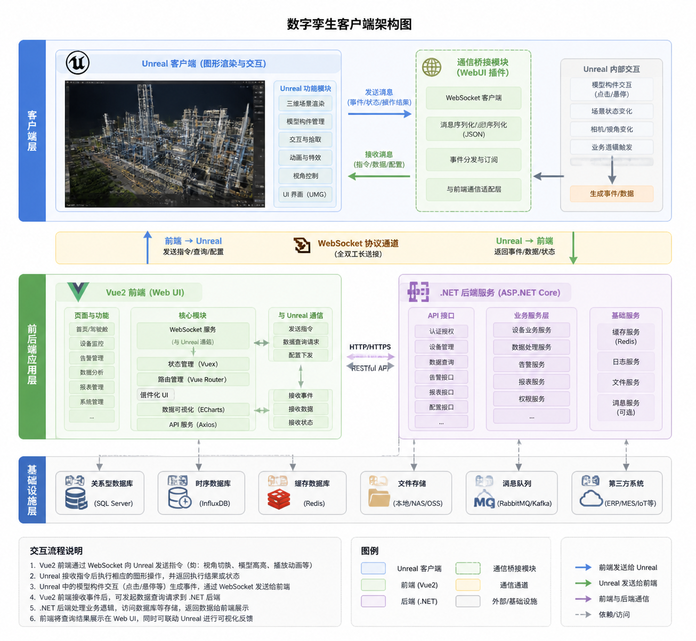

Unreal 数字孪生客户端
1. 项目定位
基于 Unreal Engine 开发的数字孪生客户端，支持三维场景显示，实时数据可视化，业务交互入口，前端和 unreal数据通讯。
2. 项目架构

3.项目介绍
建筑运维为部门的核心业务，其中比较重要的部分就是BIM模型的可视化展示和交互，主要使用的是Revit模型，数据的提取以及
基于 Unreal Engine 开发的数字孪生客户端，支持三维场景显示，实时数据可视化，业务交互入口，前端和 unreal数据通讯。

建筑运维为部门的核心业务，其中比较重要的部分就是BIM模型的可视化展示和交互，主要使用的是Revit模型，数据的提取以及